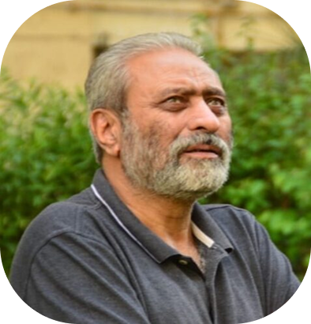
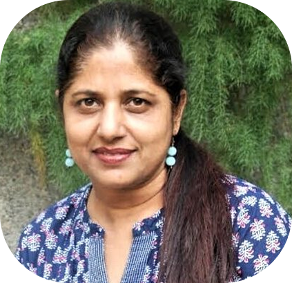

Our People
Together is a wonderful place to be
Together is a wonderful place to be
Rakesh Khatri, a documentary filmmaker by profession and an environmentalist at heart switched his full time career to Environment Conservation in 2008 committing himself to ecosystem conservation particularly in a pursuit to find a solution to the dwindling population of birds living around human population like sparrows, myna, robin etc. After multiple innovations and experimentations, he succeeded in creating a nest out of bamboo, cloth, jute, cotton among other thing which have an adoption rate of over 75%. As a result of this, the population of sparrows which was on a steep decline in 2008 is currently at a comfortable figure. In addition to this, he has also been driving multiple innovative projects supported by different corporates and institutions particularly aimed at invoking the thought and action towards environment, bio-diversity and ecosystem conservation. Founder & Managing Trustee of Eco Roots Foundation, he has committed his life to stimulating young minds towards conservation of environment. For this, he was presented with the prestigious “The National Science Award 2020-21” by Ministry of Science & Technology, Govt of India for his work with children and starting a thought, a dialogue, and concrete efforts to protect the environment. Along with this, his work with children has found mention in Limca Book of World Records twice, once for doing 1,20,000 theatre workshops with children across the countries in 12 languages in 24 cities and once for conducting Water Workshops with over 2 lakhs girl children across the country in a span of 12 months. He is also an awardee of the Earth Day Star Network and IUCN International Membership along with Green Apple Award in the House of Commons, London. His work also finds mention in Class IV ICSE English Textbook in the form of a chapter.
Monika Kapoor, trustee of the organization is an MSW from Lucknow University and has a vast experience of working with educational institutions and NGOs. She has worked with multiple schools for almost 10 years and then worked with the Leprosy Mission Trust India as a fund Raising Officer for over 5 years. In 2012, with the inception of the organization, she committed herself to the aims and objectives of Eco Roots Foundation and has been instrumental in developing and managing the relationship with the schools for our programs across India. She has also been involved with our projects at the grassroots and have motivated women from the marginalized communities to become part of the projects and get impacted by the innovative work that we are doing in rural as well as semi-urban areas. She is also an Advisor with ‘The Roots’ an NGO headed by film personality Satish Kaushik. She has also anchored and hosted many programs on environment with Delhi Doordarshan Kendra. She is currently a member of YWCA Nominating Committee and also serving Women Fellowship Christian Service as their Secretary.
A self-driven professional with over 6 years of experience of working as a tenured Voice & Accent/ Soft skills Trainer in the Corporate Sector, but from within, he is a NGO person always curious on ecosystem and biodiversity conservation and at a very young age, he has set himself as an Environment/Wild Life Expert/ Biodiversity Conservationist. As an environmentalist, his specialty lies in disseminating subject matter related to environment/ wildlife to an audience of great complexity, from school children to Corporates. He also has extensive firsthand experience with rescue and rehabilitation of the wildlife and animals around us. As a trustee of the Eco Roots Foundation, he has been doing Nature Trails for schools, colleges, corporate houses in and around Delhi- NCR since 2008 when he was still in school. He facilitates these nature trails in various sanctuaries and national parks. He has curated natural trails which are subject specific e.g. tree walks, bird watching, butterfly walks. He also conducts regular in-class workshops on multiple environmental subjects with big clients like High Commissions and Corporate houses. He also conducted a TTT for the Department of Botany, Uttrakhand wherein young adults were trained on how to be a nature guide/naturalist and how to conduct nature trails. He is responsible for conceiving new ideas for projects on environmental conservation and has also been engaged with the projects on ground.
Shikha Shukla is the Project Manager and leads the Green Window Project supported by HCL Foundation. Her past has seen her associated as State Vice President for Women’s Indian Chamber of Commerce & Industry (WICCI) – Delhi Design Council. She is also Consultant Jagran New Media for Entertainment Podcast and Special Segments. She has been associated with Community Radio and has worked with projects of prestigious organisations like UNICEF / UNESCO / COMMUNITY RADIO ASSOCIATION / Ministry of Women & Child Development / Ministry of Health & Family Welfare / Election Commission of India / National Health Mission. She has been instrumental in implementing the Green Window project and leading the project to success.
Ranica is the force behind our marketing for the products that are part of the Eco Roots stable. Further when we conceived the “From Waste to Wealth” project, one of the challenges was how would we be able to create sustainable market linkages for the project. Ranica who has been a social media and Digital Marketing Expert through her long career has build the sustainable market linkages due to which the women beneficiaries are able to have a sustainable income.
Vikram Singh is the Coordinator for the Jal Sparsh project for the state of Uttar Pradesh. He is responsible for all the activities of Jal Sparsh in UP and for the successful implementation of the project. Vikram has been in the NGO sector working majorly for the Child & Women Rights as he was part of Meerut Childline before joining Eco Roots but he has had a strong willingness to work in the Livelihood space so when Jal Sparsh opportunity came by, he grabbed it with both hands.
As our Digital Media Officer, Vineet plays a vital role in managing activities under the Harit Green Widow project supported by HCL Foundation. He oversees social media strategies and content creation, ensuring effective communication of our initiatives. Vineet also manages digital content related to Eco Roots Foundation’s activities, showcasing our commitment to environmental sustainability. Outside of work, Vineet enjoys content creation, traveling to new destinations, exploring new experiences and cultures, listening to soft music, and capturing the beauty of nature through photography.